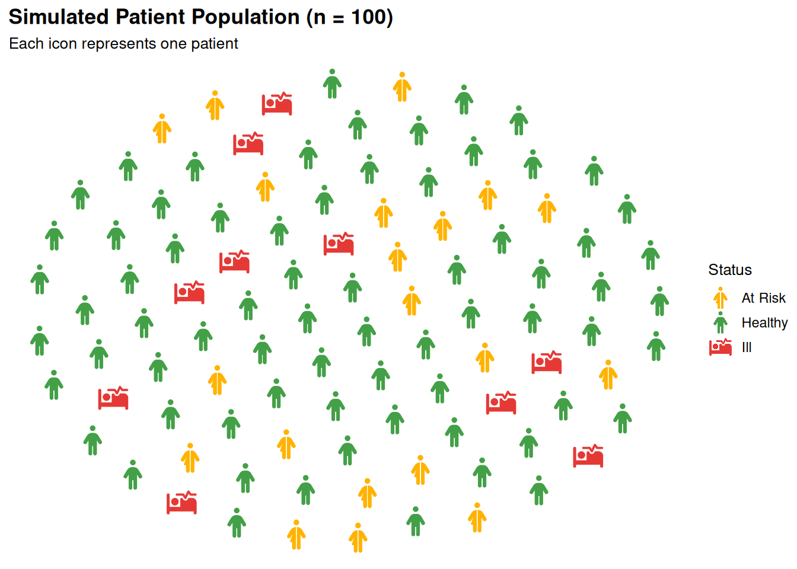

What is process_data()?
process_data() converts raw population counts into a sampled data frame (one row per icon) ready for geom_pop().
It handles:
- Calculating group proportions from raw counts
- Proportionally allocating a fixed sample size across groups
- Supporting hierarchical grouping via
high_group_var
Basic Usage
Required: data, group_var, sum_var. sample_size sets icon count (max 1,000).
df_sex <- data.frame(
sex = c("male", "female"),
n = c(63459580, 67401427)
)
df_sex_proc <- process_data(
data = df_sex,
group_var = sex,
sum_var = n,
sample_size = 100
)
head(df_sex_proc) type n prop
1 male 63459580 0.4849388
2 male 63459580 0.4849388
3 female 67401427 0.5150612
4 male 63459580 0.4849388
5 male 63459580 0.4849388
6 male 63459580 0.4849388The output contains:
-
type: group label (from
group_var) - n: total count for that group
- prop: proportion of the total
- One row per sampled icon
Understanding Proportions
With sample_size = 100, a group with 48% of the population gets ~48 icons.
df_sex_proc %>%
group_by(type) %>%
summarise(
icons = n(),
proportion = round(mean(prop) * 100, 1)
)# A tibble: 2 × 3
type icons proportion
<chr> <int> <dbl>
1 female 53 51.5
2 male 47 48.5Multiple Groups
Works with any number of groups — not just two.
df_regions <- data.frame(
region = c("North", "South", "East", "West"),
n = c(12000, 8000, 15000, 5000)
)
df_regions_processed <- process_data(
data = df_regions,
group_var = region,
sum_var = n,
sample_size = 100
)
df_regions_processed %>%
group_by(type) %>%
summarise(icons = n())# A tibble: 4 × 2
type icons
<chr> <int>
1 East 39
2 North 33
3 South 16
4 West 12Hierarchical Grouping with high_group_var
Use high_group_var to nest groups under a parent category for faceted plots.
df_health <- data.frame(
region = c("North", "South", "East", "West",
"North", "South", "East", "West"),
status = c(rep("Healthy", 4), rep("At Risk", 4)),
n = c(8000, 6000, 9000, 4000,
4000, 2000, 6000, 1000)
)
df_health_processed <- process_data(
data = df_health,
group_var = status,
sum_var = n,
high_group_var = "region",
sample_size = 100
)
df_health_processed %>%
group_by(group, type) %>%
summarise(icons = n(), .groups = "drop")# A tibble: 8 × 3
group type icons
<chr> <chr> <int>
1 East At Risk 38
2 East Healthy 62
3 North At Risk 35
4 North Healthy 65
5 South At Risk 30
6 South Healthy 70
7 West At Risk 29
8 West Healthy 71Skipping process_data()
Optional — pass data directly to geom_pop() if it already has one row per icon (max 1,000 rows per plot or facet).
df_direct <- data.frame(
activity = c(
rep("Walking", 35),
rep("Running", 25),
rep("Hiking", 20),
rep("Cycling", 15),
rep("Swimming", 5)
),
icon = c(
rep("person-walking", 35),
rep("person-running", 25),
rep("person-hiking", 20),
rep("person-biking", 15),
rep("person-swimming", 5)
)
)
# Pass directly — no process_data() needed
ggplot() +
geom_pop(
data = df_direct,
aes(icon = icon, color = activity),
size = 2, dpi = 100, legend_icons = TRUE, arrange = TRUE
) +
scale_color_manual(values = c(
"Walking" = "#5C6BC0",
"Running" = "#E53935",
"Hiking" = "#43A047",
"Cycling" = "#FFB300",
"Swimming" = "#039BE5"
)) +
theme_pop() +
theme(plot.title = element_text(color = "white"),
plot.subtitle = element_text(color = "white"),
legend.text = element_text(color = "white"),
legend.title = element_text(color = "white"),
legend.position = "bottom") +
scale_legend_icon(size = 8) +
labs(
title = "Physical Activity Distribution (n = 100)",
subtitle = "Each icon represents one survey participant",
color = "Activity"
)
Summary
| Parameter | Description |
|---|---|
data |
Input data frame with group counts |
group_var |
Column to group by (unquoted) |
sum_var |
Column with population counts |
sample_size |
Number of icons to generate (max 1,000) |
high_group_var |
Optional parent grouping for faceting |